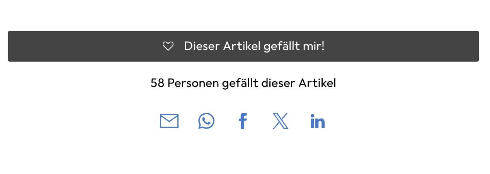
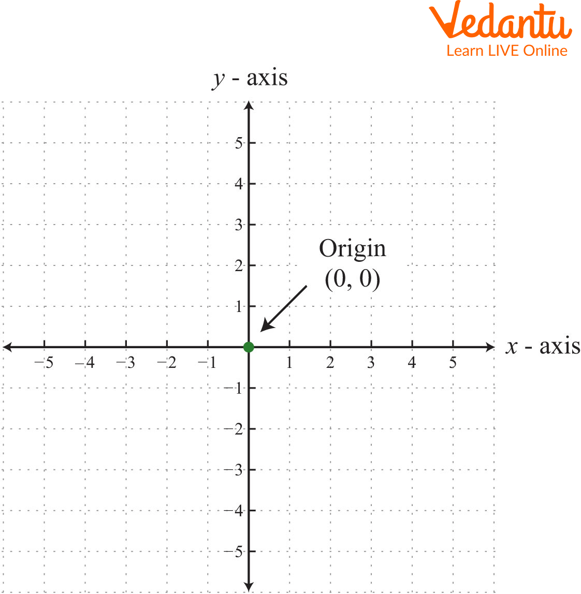
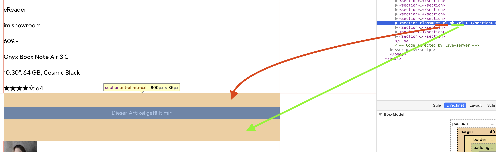
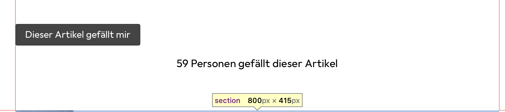
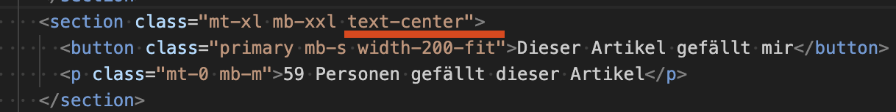

❤️ Like Bereich
Responsive Layout-Unterschiede
Der "Like"-Bereich enthält keine neuen Elemente (ausser noch der "# Personen gefällt dieser Artikel"). Vor allem aber definiert der Bereich verschiedene Layouts für Mobile und Desktop, damit alles etwas besser passt.
Layout-Vergleich
| Mobile | Desktop |
|---|---|
|  |
CSS-Methodik: Utility-First
Wir können für diesen Bereich ein eigenes CSS anlegen oder gezielte CSS-Klassen schreiben, die etwas allgemeiner gehalten sind. Dadurch kann die Wiederverwendung erhöht werden.
Utility-First Ansatz
Anstelle: "blog-page-like-button"
Verwende: Mehrere Klassen die den jeweiligen Anwendungszweck beschreiben
Beispiel: "margin-bottom-small" oder ähnlich
CSS-Methodologien
Diese Art von CSS nennt sich "Utility-First" und wird etwa von der CSS-Bibliothek Tailwind und teilweise von Bootstrap verwendet.
Unser Ansatz: Kombination von:
- Utility-Klassen (Utility-First CSS)
- Komponenten-basierten/semantischen Klassen (OOCSS)
📖 Mehr Infos: CSS Methodologies Guide
Utilities.css erstellen
Setup
Erstelle ein neues CSS-File utilities.css und importiere es im main.css:
@import url("utilities.css");
Margin-Werte analysieren
Wenn du die Vorlage auf Desktop-Grösse untersuchst und nach verschiedenen Margins Ausschau hältst, wirst du verschiedene Angaben finden:
| Wert | Bezeichnung | Abkürzung |
|---|---|---|
| 0px | Zero | 0 |
| 16px | Small | s |
| 24px | Medium | m |
| 32px | Large | l |
| 40px | X-Large | xl |
| 64px | XX-Large | xxl |
Koordinatensystem verstehen

Für oben/unten bzw. rechts/links wird gerne y bzw. x benutzt, welches aus dem klassischen Koordinatensystem stammt.
Naming Convention
Für "margin top small" machen wir mt-s draus:
- m = margin
- t = top
- s = small
Utility-Klassen implementieren
Margin-Top Utilities
/* margin-top utilities */
.mt-0 {
margin-top: 0;
}
.mt-s {
margin-top: 16px;
}
.mt-m {
margin-top: 24px;
}
.mt-l {
margin-top: 32px;
}
.mt-xl {
margin-top: 40px;
}
.mt-xxl {
margin-top: 64px;
}
Margin-Bottom Utilities
/* margin-bottom utilities */
.mb-0 {
margin-bottom: 0;
}
.mb-s {
margin-bottom: 16px;
}
.mb-m {
margin-bottom: 24px;
}
.mb-l {
margin-bottom: 32px;
}
.mb-xl {
margin-bottom: 40px;
}
.mb-xxl {
margin-bottom: 64px;
}
Margin Vertical Utilities
/* margin-top and bottom utilities */
.my-0 {
margin-top: 0;
margin-bottom: 0;
}
.my-s {
margin-top: 16px;
margin-bottom: 16px;
}
.my-m {
margin-top: 24px;
margin-bottom: 24px;
}
.my-l {
margin-top: 32px;
margin-bottom: 32px;
}
.my-xl {
margin-top: 40px;
margin-bottom: 40px;
}
.my-xxl {
margin-top: 64px;
margin-bottom: 64px;
}
HTML-Anwendung
Nachdem nun die CSS-Klassen erstellt sind, fülle im HTML nun dort die Klassen ein, wo sie entsprechend für ein Margin sorgen.

✅ Progress Tracking
📋 Stand Like-Bereich:
- ✅ Abstände oben und unten
- ❌ Text unter dem Button zentriert mit richtigen Abständen
- ❌ Breite des Like-Buttons
Text unter dem Button
Text-Alignment
Du hast bereits die nötigen margins für die Abstände definiert und musst sie nur noch korrekt einsetzen im HTML. Allenfalls musst du etwas mit "0" aushelfen, wenn das User Agent Stylesheet dazwischen funkt.
Für's Zentrieren gibt es grundsätzlich verschiedene Varianten. Die einfachste für den Fall ist aber text-align: center.
Text Utilities
/* text utilities */
.text-center {
text-align: center;
}
.text-left {
text-align: left;
}
.text-right {
text-align: right;
}
.text-justify {
text-align: justify;
}
✅ Updated Progress:
- ✅ Abstände oben und unten
- ✅ Text zentriert mit richtigen Abständen
- ❌ Breite des Like-Buttons
Breite des Bereichs
Desktop-Analyse
Der Bereich ist in den verschiedenen Elementen in der Breite schmaler. Im Prinzip könnte man einfach der ganzen Section eine Breite verpassen. Die Vorlage nutzt aber tatsächlich Einschränkungen auf dem Button und dem Text darunter selbst.
Untersuche mit dem Browser die Elemente. Dann wirst du sehen, dass beim Desktop folgendes steht:
- width:
fit-content - min-width:
200px
Button-CSS erweitern
Da dies sehr spezifisch ist, macht es Sinn, beim button.css eine Spezialbreite einzuführen:
&.width-200-fit {
min-width: 200px;
width: fit-content;
}
HTML erweitern
<button class="primary width-200-fit">❤️ Gefällt mir</button>

Zentrierung korrigieren
Erst jetzt fällt auf, dass der Button eigentlich linksseitig orientiert ist. Auch das sollten wir ändern.
Der Trick ist relativ simpel: Anstelle das "text-center" auf dem Text selbst zu vergeben, setzt du die CSS-Klasse auf dem section container, welcher Button und Text vereint. Somit kriegen alle Elemente zentriert.

🎉 Falls du das von Beginn an so gemacht hast, umso besser!
✅ Final Progress:
- ✅ Abstände oben und unten
- ✅ Text zentriert mit richtigen Abständen
- ✅ Breite des Like-Buttons
Ein ❤️ für Details
Falls du willst und magst, kannst du im Like-Bereich noch 2-3 Details beheben:
Font-Size Anpassung
Wenn du genau hinschaust, ist die Font-Size hier kleiner als üblich. Versuche herauszufinden wie gross und finde einen Weg mit CSS, dies anzupassen.
SVG-Herz im Button
Das Herz im Button ist ein SVG und sollte weiss sein. Zudem gibt es dort noch einen Abstand und alles sollte auf der selben Höhe liegen. All das ist eher schwierig. Wenn du dich fit dafür fühlst, versuche es. Es muss aber auch nicht sein.
Endlösung
Du findest den Endstand der Lösung auf GitHub
Like-Bereich ist responsive und professionell umgesetzt! 🎉